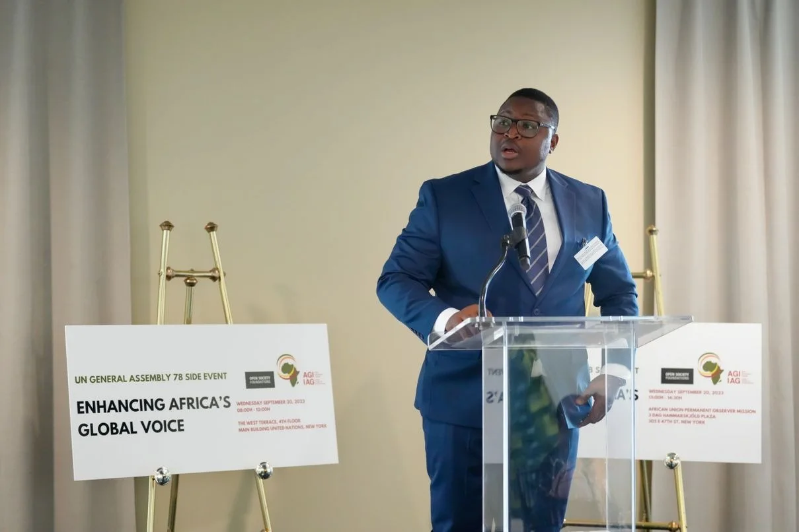
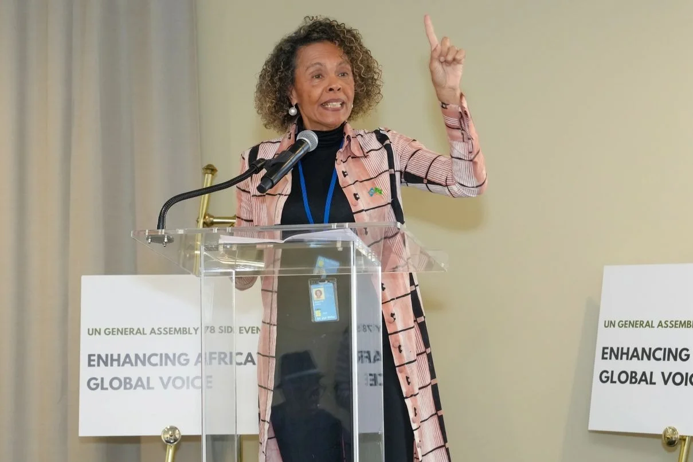

Le 20 septembre 2023, en marge de la 78e session de l'Assemblée générale des Nations Unies, l'Institut Africain de la Gouvernance a organisé à New York un évènement de haut niveau sous le thème « Enhancing Africa's Global Voice ». Tenue avec le soutien d'Open Society-Africa, cette rencontre sur invitation a réuni des chefs d'État africains, des responsables politiques, des représentants de la société civile et des partenaires institutionnels pour examiner la place de l'Afrique dans un ordre multilatéral en mutation rapide.
L'évènement était le deuxième d'une série de dialogues consacrés à la voix de l'Afrique et au multilatéralisme. Le premier s'était tenu à Lusaka, en Zambie, en mars 2023, en marge du Sommet pour la Démocratie, en collaboration avec l'Institute for Security Studies. L'édition new-yorkaise s'est déroulée sur deux sites en une seule journée : une cérémonie d'ouverture et une séance de haut niveau à la West Terrace du siège des Nations Unies le matin, suivies de deux panels de discussion dans les bureaux de l'Union africaine l'après-midi.
Le constat de départ
La gouvernance mondiale concerne l'Afrique à un niveau sans commune mesure avec sa représentation. Pour peser sur les réformes, le continent a besoin d'une voix forte, coordonnée et cohérente dans les enceintes où s'écrivent les règles internationales.
Pourquoi ce dialogue
L'Agenda 2063 de l'Union africaine fixe l'ambition d'une Afrique intégrée, prospère et en paix, agissant comme une force dynamique sur la scène internationale. La rencontre s'est ouverte sur un constat clair : les positions africaines restent sous-représentées au Conseil de sécurité des Nations Unies, dans les institutions de Bretton Woods, au G20 et à l'OCDE, alors même que les décisions prises dans ces enceintes façonnent les économies et les sociétés du continent.
Le programme entendait lire l'environnement mondial en mutation et son effet sur les économies et les sociétés africaines, peser les options dont disposent les États africains pour renforcer le leadership et la gouvernance, et identifier les partenariats et les étapes nécessaires à une présence africaine plus effective dans les enceintes multilatérales. La réforme de l'architecture financière mondiale, y compris la fiscalité et les flux financiers illicites, ainsi que la mise en œuvre de la Zone de libre-échange continentale africaine, figuraient parmi les questions structurelles à l'ordre du jour.
L'ouverture de haut niveau
La journée s'est ouverte à la West Terrace du siège des Nations Unies par les mots de bienvenue du Dr Abdoulie Janneh, Président du Conseil d'administration de l'Institut Africain de la Gouvernance, et de Lord Mark Malloch-Brown, Président de l'Open Society Foundations. A suivi une séance de haut niveau, animée par la présentatrice de la SABC Iman Rappetti, conçue comme une conversation sur la voix de l'Afrique dans le contexte du multilatéralisme.

La conversation d'ouverture s'est articulée autour de quatre chefs d'État africains : S.E. Azali Assoumani, Président de l'Union des Comores et Président de l'Union africaine en 2023 ; S.E. Nana Akufo-Addo du Ghana ; S.E. Macky Sall du Sénégal ; et S.E. Julius Maada Bio de la Sierra Leone. Parmi les intervenants figuraient la Vice-Présidente de l'Ouganda, S.E. Jessica Alupo, le Président de la Commission de la CEDEAO, S.E. Dr Omar Alieu Touray, et la Secrétaire générale adjointe des Nations Unies et Conseillère spéciale pour l'Afrique, S.E. Cristina Duarte.
Deux panels de discussion

L'après-midi s'est poursuivi dans les bureaux de l'Union africaine avec deux panels animés. Le premier interrogeait la capacité de l'Union africaine à influencer la réforme multilatérale en pleine guerre en Ukraine et face aux doubles standards visibles dans la réponse internationale aux crises. Il réunissait l'Ambassadeur Bankole Adeoye, Commissaire aux Affaires politiques, à la Paix et à la Sécurité de l'UA ; S.E. Demeke Mekonen, Vice-Premier Ministre et Ministre des Affaires étrangères de l'Éthiopie ; et l'Ambassadeur Dr Michael Imran Kanu, Représentant permanent de la Sierra Leone auprès des Nations Unies.
Le second panel portait sur ce que les partenariats et les priorités de l'Union africaine signifient pour le citoyen africain. Il réunissait l'Ambassadeur Albert M. Muchanga, Commissaire au Commerce et à l'Industrie de l'UA ; S.E. Dhoihir Dhoulkamal, Ministre des Affaires étrangères des Comores ; le Dr Donald Kaberuka, ancien Président de la Banque africaine de développement ; et le Dr Chidi Anselm Odinkalu, de la Fletcher School. Chaque panel s'est conclu par des contributions de la salle, sous la modération d'Iman Rappetti.
Participants et partenaires
La rencontre s'est appuyée sur une représentation des Nations Unies, de l'Union africaine, des organisations régionales et de la société civile. Parmi les personnes annoncées figuraient S.E. Fatoumata Ndiaye, Secrétaire générale adjointe des Nations Unies aux services de contrôle interne ; S.E. Ahunna Eziakonwa, Administratrice adjointe du PNUD et Directrice régionale pour l'Afrique ; le Professeur Eddie Maloka, Directeur général du Secrétariat continental du MAEP ; et le Dr Ebrima Sall, Secrétaire exécutif de Trust Africa. L'Institut Africain de la Gouvernance était représenté par le Dr Abdoulie Janneh et le Dr Fode Ndiaye, Directeur général adjoint. L'Open Society était représentée au plus haut niveau par le Dr Alexander Soros et Lord Mark Malloch-Brown.
Organisé par l'Institut Africain de la Gouvernance avec le soutien d'Open Society-Africa, le dialogue de New York prolongeait un effort soutenu pour donner à l'Afrique une voix plus forte et mieux coordonnée dans les enceintes où s'écrivent les règles internationales.
Compte rendu de l'évènement Enhancing Africa's Global Voice, organisé par l'Institut Africain de la Gouvernance avec le soutien d'Open Society-Africa en marge de la 78e Assemblée générale des Nations Unies. New York, 20 septembre 2023.